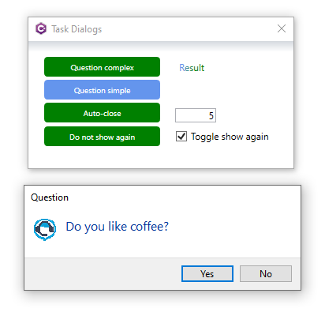
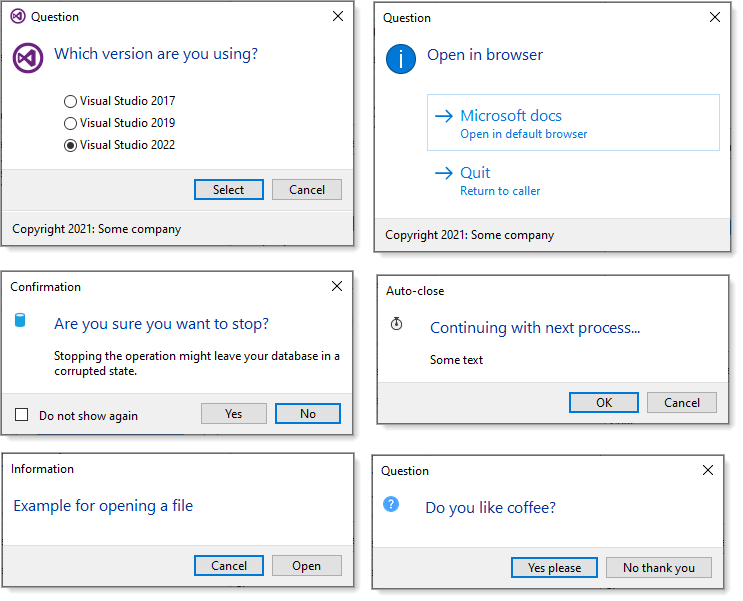

This repository is for providing ideas for how a developer writing for windows forms might create a class project with custom controls that may be needed from time to time when the standard controls don�t fit specific needs.
For a list of controls and descriptions see the following page.
Each control has the following properties
| Property | Description |
|---|---|
| Id | An int to identify the control |
| HasId | Indicates if the control has an Id |
| Stash | A string property for storing anything |
You can of course remove these properties or change them, for instance rather than Stash as a string the property could be a type such as a class.
.NET Core 5 TaskDialog which has examples for creating custom MessageBoxes such as

